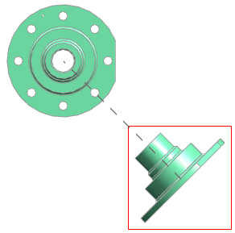

Use the Hinge alignment method to create a permanent alignment between a base view and a projected view with a non-orthogonal hinge line. The alignment is enforced even when views change or move. The Hinge method is available only for projected views created from imported views.
|
Note |
You can create permanently aligned orthogonal projected views using the Associative Alignment function. |
An associative alignment between views is indicated by a dashed line when a view is highlighted or selected.

|
Application |
Drafting |
|
Toolbar |
Drawing→Projected View Drawing→Add View Drop-down list→Projected View |
|
Menu |
Insert→View→Projected |
|
Shortcut Menu |
Right–click a view border→Add Projected View |
|
Part Navigator |
Right–click a view node→Add Projected View |
|
Location in dialog box |
View Origin group → under Placement →Method list → Hinge |